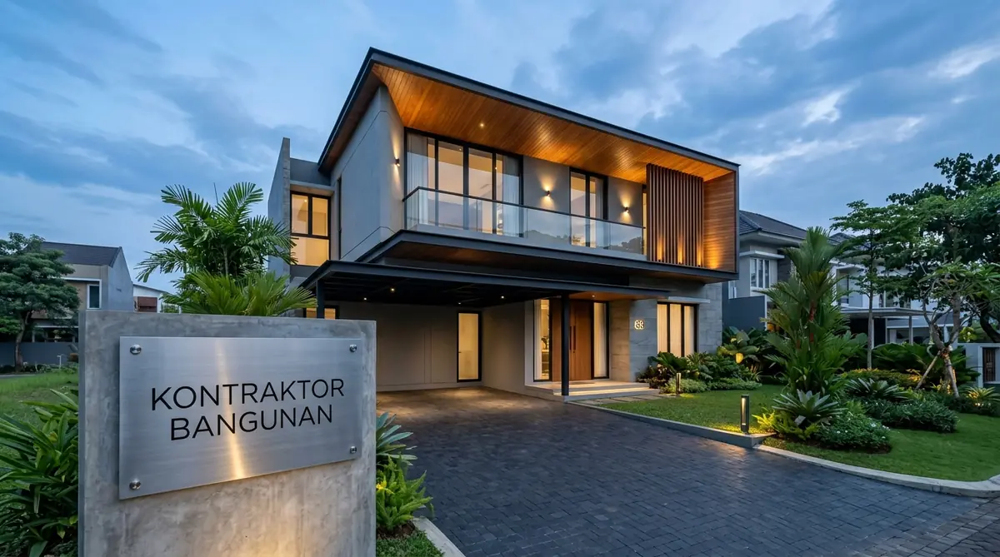

Mengapa Renovasi Rumah di Surabaya Membutuhkan Kontraktor Berpengalaman?
Kontraktor berpengalaman memahami karakteristik tanah lempung Surabaya, titik rawan bocor iklim tropis, serta regulasi Garis Sempadan Bangunan (GSB) Pemkot Surabaya.
Merenovasi bangunan eksisting jauh lebih rumit daripada membangun dari nol di atas tanah kosong. Ketiadaan gambar as-built drawing rumah lama sering kali menyembunyikan posisi pipa air atau kabel listrik di dalam dinding. Berdasarkan laporan Asosiasi Kontraktor Perumahan Jawa Timur 2025/2026, lebih dari 38% proyek renovasi mandiri dengan tukang borongan harian tanpa pengawas mengalami keretakan balok akibat salah membongkar dinding pemikul beban (bearing wall).
Keunggulan memilih Kontraktor Bangunan:
- Audit Struktur Eksisting: Pemeriksaan mendalam kekuatan pondasi dan beton lama sebelum memutuskan metode pembongkaran.
- Desain 3D Fasad Baru Gratis: Memberikan visualisasi 3D tampak depan rumah baru sebelum pekerjaan fisik dimulai.
- Penyusunan Jadwal Kurva S: Progres pekerjaan dipantau mingguan sehingga proyek selesai tepat waktu sesuai Surat Perjanjian Kerja (SPK).
Bagaimana Tahapan Alur Kerja Jasa Renovasi Rumah Surabaya?
Tahapan meliputi survei lokasi gratis, penyusunan RAB & desain 3D, penandatanganan SPK, eksekusi fisik bertahap, hingga serah terima kunci bergaransi.
Berikut alur sistematis renovasi rumah tanpa rasa cemas:
1. Survei Lokasi & Konsultasi Gratis
Tim teknis mengunjungi rumah Anda di Surabaya untuk mengukur dimensi riil, mendeteksi sumber kebocoran/retak, dan mencatat keinginan renovasi pemilik rumah.
2. Pembuatan Desain 3D & RAB Transparan
Kami menyusun sketsa tata ruang baru beserta rincian Rencana Anggaran Biaya (RAB) yang mencantumkan merek material, volume, dan harga satuan tanpa ada biaya tersembunyi.
3. Kontrak Kerja Resmi (SPK)
Penerbitan dokumen kontrak berkekuatan hukum yang mencakup jadwal pengerjaan (time schedule), tahapan pembayaran termin progres fisik, dan pasal klausul garansi.
4. Eksekusi Konstruksi & Proteksi Area
Pemasangan terpal pelindung debu, pembongkaran selektif, pengerjaan struktur baru, instalasi MEP, hingga finishing cat dan sanitair di bawah pengawasan Site Engineer berlisensi.
5. Serah Terima & Garansi Pemeliharaan
Pengecekan bersama (checklist final). Setelah rumah rapi dan bersih, kami menyerahkan kunci beserta Sertifikat Garansi Pemeliharaan resmi.

Proses suntik pondasi cakar ayam dan pembesian sloof pengikat untuk penambahan lantai 2 rumah di Surabaya.
Tabel Komparasi Paket Renovasi Rumah di Surabaya
Tabel komparasi menguraikan rincian biaya, cakupan pekerjaan, dan durasi pengerjaan untuk berbagai skala renovasi rumah di Surabaya.
| Parameter Layanan | Renovasi Ringan / Kosmetik | Renovasi Sedang / Fasad & Ruang | Renovasi Berat / Tambah Lantai 2 |
|---|---|---|---|
| Kisaran Estimasi Biaya | Rp15.000.000 – Rp45.000.000 | Rp50.000.000 – Rp150.000.000 | Rp3.500.000 – Rp4.800.000 / m² |
| Durasi Pengerjaan | 1 – 3 Minggu | 3 – 7 Minggu | 2,5 – 4 Bulan |
| Cakupan Pekerjaan | Cat dinding, ganti sanitair, plafon gypsum | Rombak fasad, re-layout dapur/toilet, lantai granit | Suntik pondasi cakar ayam, dak beton, dinding lt 2, atap baru |
| Status Penghuni | Tetap Bisa Ditinggali | Sebagian Ruangan Dikosongkan | Disarankan Mengungsi Sementara |
| Desain Visual 3D | Tidak Diperlukan | Desain Fasad 3D Render | 3D Render Lengkap + Gambar DED Struktur |
| Masa Garansi | 3 Bulan | 6 Bulan | 12 Bulan (Garansi Struktur Penuh) |
- Gunakan Metode Tile on Tile untuk Lantai: Jika lantai keramik lama masih kokoh dan tidak kopong, gunakan semen mortar perekat khusus untuk menimpa keramik baru tanpa membongkar lantai lama, hemat biaya bongkar hingga 40%.
- Perbaiki Sumber Masalah, Bukan Gejalanya: Pada dinding berjamur, kupas plesteran lama, berikan lapisan waterproofing semen slurry, lalu aci ulang agar jamur tidak muncul kembali saat musim hujan pesisir Surabaya.
- Pilih Sistem Pembayaran Berbasis Termin Riil: Jangan pernah membayar uang muka lebih dari 20-30% di awal kepada pemborong sebelum ada material dan progres nyata di lapangan.
Pertanyaan yang Sering Diajukan (FAQ)
Kesimpulan Praktis
Merenovasi rumah adalah langkah cerdas meningkatkan kenyamanan hidup keluarga dan melipatgandakan nilai jual aset properti Anda di Surabaya. Hubungi kami untuk survei lokasi dan estimasi RAB gratis.